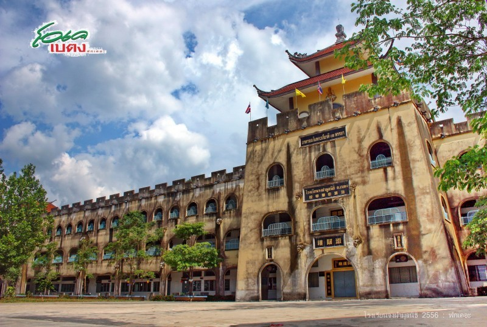
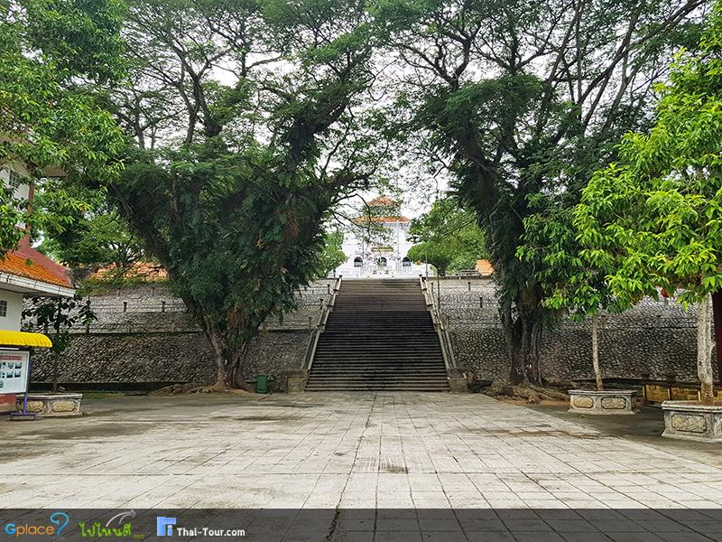
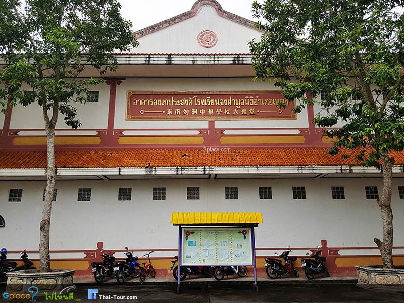
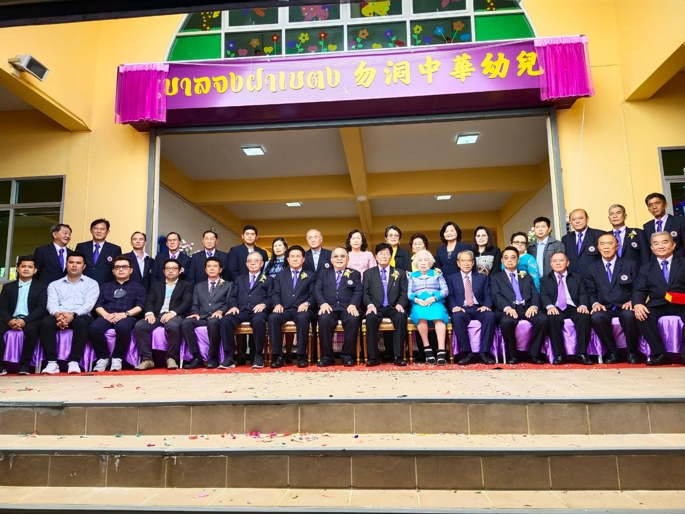

勿洞中华学校

โรงเรียนจงฝามูลนิธินับเป็นจุดท่องเที่ยวของ อ.เบตง อีกจุดหนึ่งที่เป็นที่นิยมมาถ่ายรูปทั้งชาวไทยและต่างประเทศ ซึ่งอยู่ไม่ไกลจากโรงแรมที่พักในเมืองเบตง ตั้งอยู่ติดกับวัดพุทธาธิวาส สามารถที่จะเดินเท้ามาเที่ยวได้สบาย
โรงเรียนนี้มีชื่อเดิม “โรงเรียนจงฝา” ได้จัดตั้งมาประมาณ 90 กว่าปีแล้ว แต่ได้ดำเนินการถูกต้องตามระเบียบของกระทรวงศึกษาธิการ เมื่อปี พ.ศ. 2492

โรงเรียนนี้จัดตั้งขึ้นโดยพ่อค้าประชาชนชาวอำเภอเบตง เดิมมีฐานะเป็นโรงเรียนราษฎร์ของเอกชน มีนาย ไล่เลี่ยง ฟัดเป็นเจ้าของ และนายอึ่งฟันงี่ แซ่อึ่ง เป็นผู้จัดการ นายวิชิต ยุ่นยะสิทธิ์ เป็นครูใหญ่คนแรก ประมาณปี พ.ศ. 2466 ได้เปิดทำการสอนครั้งแรก ที่สมาคมศิษย์เก่าโรงเรียนจงฝามูลนิธิ

ประมาณปี พ.ศ. 2484 ได้ย้ายสถานที่ทำการ โดยใช้อาคารของสมาคมพาณิชย์จีน กับโรงภาพยนตร์สหมิตร เป็นสถานที่ทำการสอนชั่วคราว ประมาณปี พ.ศ. 2491 ได้ย้ายมาทำการสอน ณ ที่ตั้งโรงเรียนในปัจจุบัน
อนุบาลจงฝาเบตง

โรงเรียนจงฝารับนักเรียนได้ จำนวน 1,800 คน ประมาณปี พ.ศ.2511 ได้โอนกิจการของโรงเรียน ให้กับมูลนิธิอำเภอเบตง และเปลี่ยนชื่อโรงเรียนเป็น “จงฝามูลนิธิ”
โดยมีนาย สมเกียรติ พันธุ์พฤกษ์ เป็นผู้ลงนามแทนผู้รับใบอนุญาต และนายดำรง ฉันทศรีวิโรจน์ เป็นผู้จัดการการดำรงอยู่ของโรงเรียน โรงเรียนดำรงอยู่ได้โดยการเก็บค่าธรรมเนียมอื่นเพื่อพัฒนาคุณภาพการศึกษาและได้รับเงินสนับสนุนจากรัฐบาล เงินบริจาคจากพ่อค้า ประชาชน และจากสมาคมต่าง ๆ ในอำเภอเบตง
ปัจจุบันโรงเรียนได้จดทะเบียนเป็นมูลนิธิและอยู่ในความดูแลของมูลนิธิ อำเภอเบตง การดำเนินการสอน เดิมโรงเรียนได้เปิดทำการสอนตั้งแต่ชั้นประถมศึกษาปีที่ 1 ถึงชั้นประถมศึกษา ปีที่ 4 วิชาที่สอนคือ วิชาสามัญ และภาษาจีนกลาง
ปัจจุบันโรงเรียนจงฝามูลนิธิมีการจัดกิการเรียนการสอนถึง 3 ระดับ คือ อนุบาล , ประถม และมัธยมศึกษา